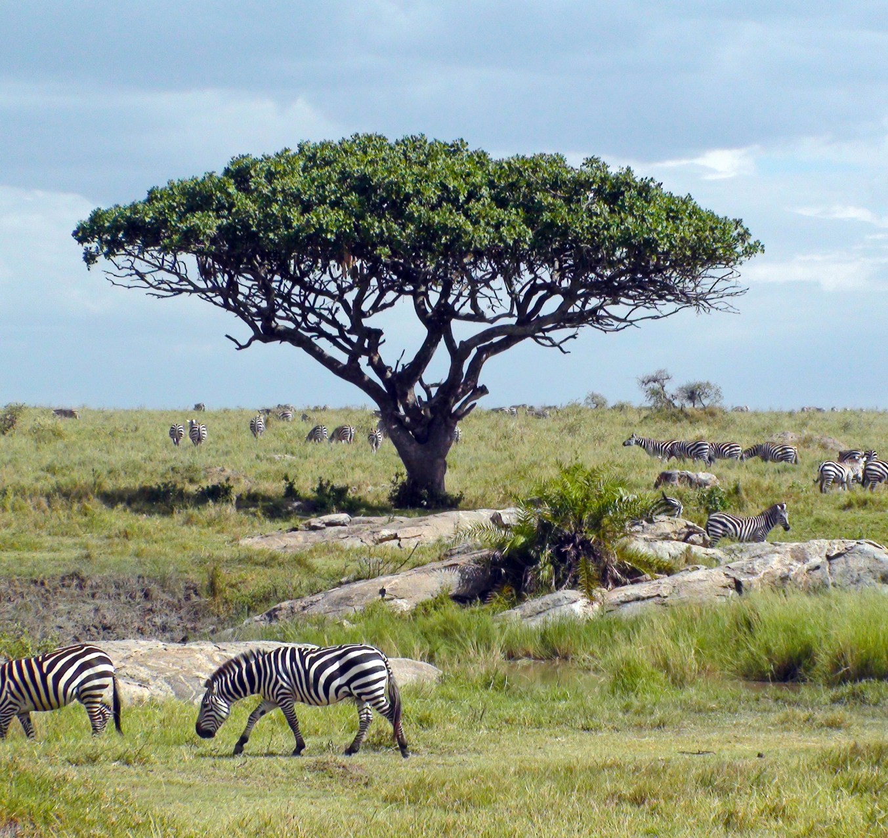
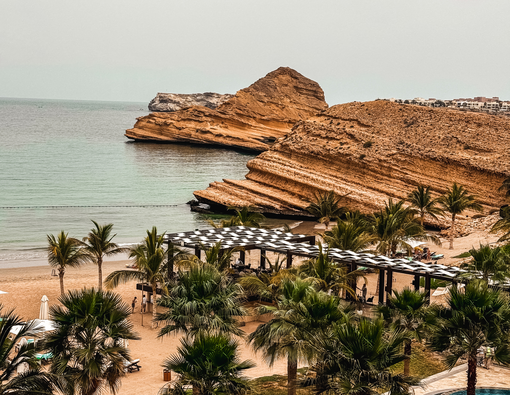
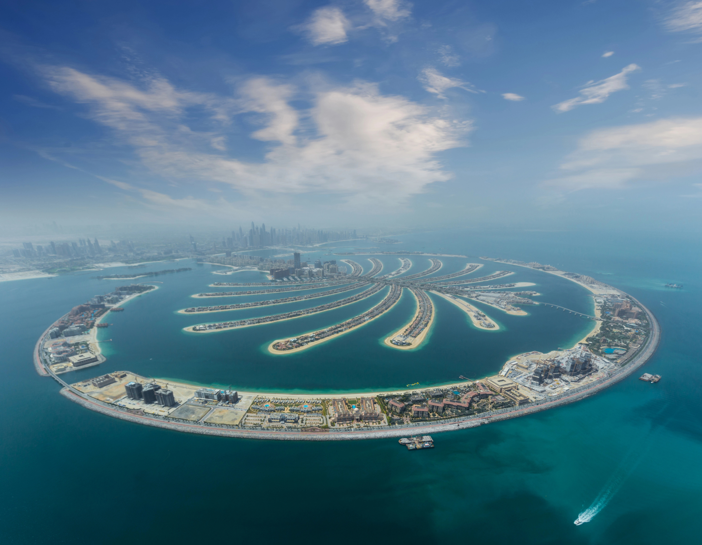

Культура Африки невероятно многообразна: более двух тысяч языков, уникальные племенные традиции, древние обряды и танцы. Каждая из 54 стран отличается своими обычаями и ритуалами, но везде можно почувствовать общую черту — особую теплоту, уважение к земле и искренность людей. В Кении и Танзании вы познакомитесь с народом масаи, известным своей гордостью, преданностью традициям и глубоким уважением к природе. Их обычаи и танцы, включающие знаменитый «прыгающий танец», в котором мужчины демонстрируют свою выносливость, завораживают и вызывают восхищение.
АФРИКА
Африка — это континент, где оживают древние легенды, а природа завораживает своей первозданной красотой. От бескрайних саванн Серенгети до величественных дюн Намибии, Африка удивляет разнообразием ландшафтов и богатством дикой природы. Здесь можно отправиться на сафари и увидеть «большую пятерку» — львов, слонов, носорогов, буйволов и леопардов — в их естественной среде обитания.
Каждая страна Африки обладает уникальной культурой: в Марокко оживает дух восточных сказок, Южная Африка приглашает исследовать мыс Доброй Надежды, а Египет — прикоснуться к древним пирамидам. Африка — это место для тех, кто жаждет приключений, ярких впечатлений и уникальных встреч. Здесь вы почувствуете пульс жизни, узнаете секреты древней истории и, возможно, откроете что-то новое о себе.


Африка — это настоящий рай для любителей дикой природы. Здесь можно отправиться на сафари и увидеть «большую пятерку» животных: льва, слона, носорога, буйвола и леопарда. Национальные парки, такие как Серенгети в Танзании и Масаи-Мара в Кении, славятся своим разнообразием животных и уникальными миграциями антилоп гну. Представьте себе, как тысячи животных пересекают саванны, создавая одно из самых величественных природных зрелищ на планете. В каждой стране Африки природа словно создана для того, чтобы удивлять и вдохновлять.
Наши операторы доступны 24/7:
+442038681146 (WhatsApp)
EMAIL: info@viptourlondon.com
ИССЛЕДУЙТЕ СТРАНЫ АФРИКИ
ВМЕСТЕ С НАМИ
Египет
Египет — страна, где история и культура переплетаются с потрясающими природными пейзажами. На берегах величественного Нила находятся знаменитые пирамиды Гизы и Сфинкс, манящие путешественников со всего мира.
Кроме археологических находок, Египет предлагает приключения для любителей природы. Красное море с его яркими коралловыми рифами стало раем для дайверов и любителей водных видов спорта.


Танзания
Танзания — это настоящая жемчужина Восточной Африки, славящаяся своими потрясающими пейзажами и богатым культурным наследием. Страна известна величественной горой Килиманджаро, самой высокой точкой Африки, привлекающей альпинистов со всего мира. Национальный парк Серенгети, знаменитый своими ежегодными миграциями животных, предлагает захватывающие сафари и уникальную возможность увидеть "большую пятерку" в их естественной среде обитания.
Кения
Кения — это яркая страна, где сливаются потрясающие природные пейзажи, богатая культура и разнообразие дикой природы. От величественных саванн Масаи-Мара, где можно наблюдать "Большую пятерку" — льва, леопарда, носорога, слона и буйвола, до великолепных пляжей на побережье Индийского океана, Кения предлагает уникальные возможности для приключений.


Мадагаскар
Мадагаскар — это островное государство, которое предлагает уникальное сочетание потрясающей природы и богатого культурного наследия. Расположенный у восточного побережья Африки, этот остров известен своей удивительной биоразнообразием, включая множество эндемичных видов животных и растений. Например, знаменитые лемуры, которые не встречаются нигде больше в мире, стали символом страны.
Сейшелы
Сейшелы — это настоящий рай на земле, расположенный в Индийском океане. Этот архипелаг из 115 островов славится своими белоснежными пляжами, кристально чистыми водами и уникальной природой. Главный остров, Маэ, предлагает не только потрясающие пляжи, но и великолепные горные пейзажи и тропические леса. Сейшелы — это не только место для отдыха, но и рай для любителей подводного мира. Здесь можно насладиться дайвингом и сноркелингом среди ярких коралловых рифов и экзотических морских обитателей.


Кабо-Верде
Кабо-Верде — это удивительный архипелаг, расположенный в Атлантическом океане, всего в нескольких сотнях километров от побережья Западной Африки. Состоящий из десяти вулканических островов, Кабо-Верде славится своими потрясающими пляжами, кристально чистой водой и живописными горными ландшафтами. Каждый остров имеет свой уникальный характер: например, остров Сал известен своими белоснежными пляжами и активными водными видами спорта, а Фогу привлекает любителей горных походов своими живописными вершинами.